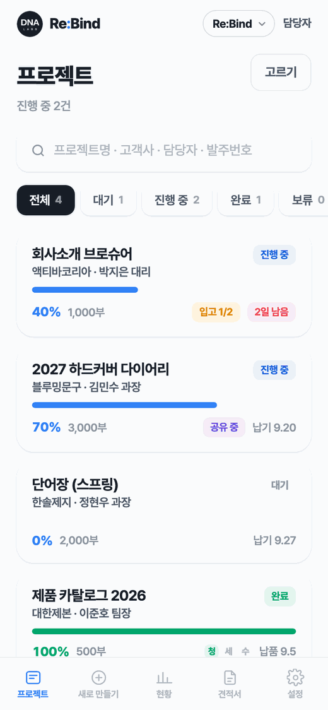
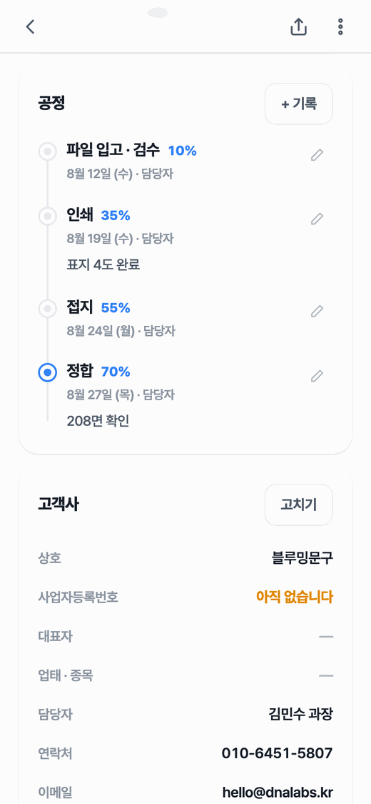
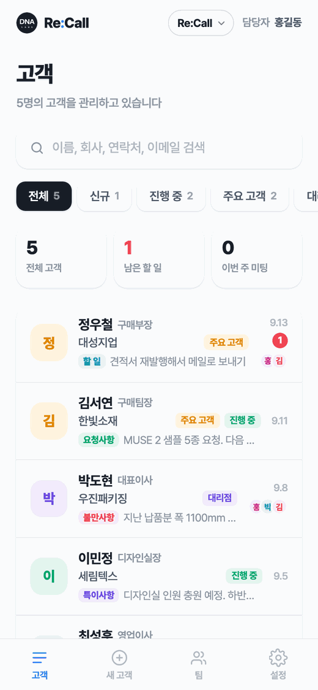
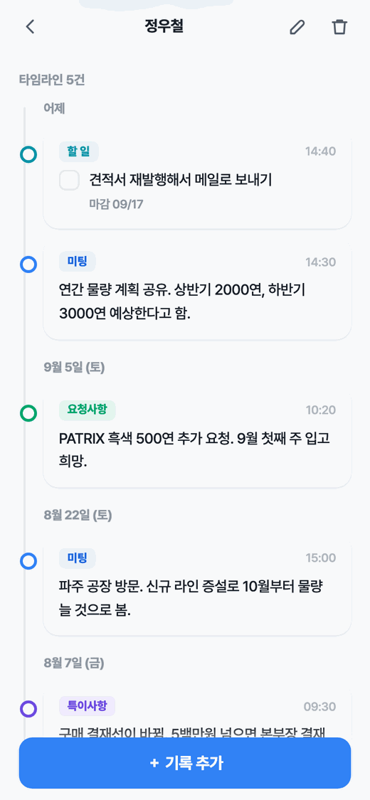
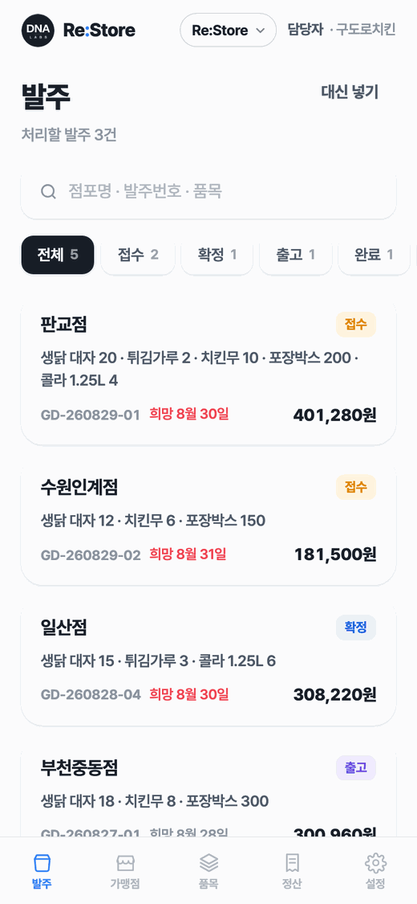
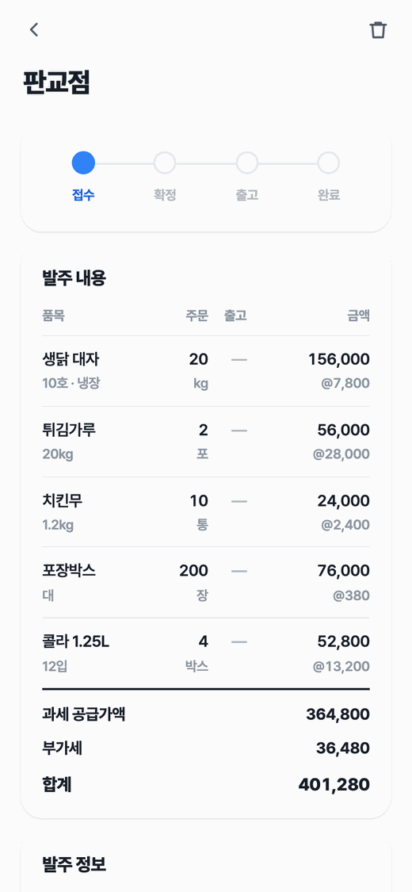

보여주기용 시연이 아니라 매일 열어 쓰는 것을 만듭니다. 웹사이트, 모바일 앱, 회사 안에서 도는 업무 시스템까지. 만든 뒤에도 쓰이는 동안 함께 고칩니다.
Re:Service
아래 화면은 실제 앱을 그대로 찍은 것입니다. 셋 다 dnalabs.kr/reservice 한 곳에서 들어갑니다.


제본소 · 인쇄소처럼 공정이 여러 단계로 나뉜 곳


밖에서 사람을 만나는 영업 담당자


여러 점포에 물건을 내보내는 본사
하는 일
규모가 크지 않아도 좋습니다. 오히려 작고 분명한 일을 잘합니다.
회사 소개, 제품 소개, 예약과 문의까지. 검색에 걸리고 휴대폰에서 잘 보이는 것을 기본으로 합니다. 만든 뒤 내용을 직접 고치실 수 있게 넘겨 드립니다.
안드로이드와 아이폰에서 도는 앱을 만듭니다. 카메라, 주소록, 알림처럼 웹만으로 안 되는 것이 필요할 때 앱으로 갑니다.
엑셀과 카카오톡으로 버티고 있는 일을 시스템으로 옮깁니다. 고객 관리, 재고, 공정, 거래명세서 — 회사마다 다른 그 일을 맞춰 만듭니다.
만든 것
지금 이 순간 누군가 쓰고 있는 것만 적었습니다.
Re:Bind(제조 공정) · Re:Call(고객관리) · Re:Store(가맹점 발주)를 만들어 놓고 저희가 직접 운영합니다. 쓰는 회사가 늘 때마다 고칩니다.
도메인, 서버, 보안 인증서를 저희가 맡고 내용이 바뀔 때마다 고쳐 드리는 방식으로 계약합니다.
매번 손으로 하던 집계와 문서 작업을 줄입니다. 쓰던 엑셀을 버리지 않고 그대로 이어 붙이는 방식도 씁니다.
실전 적용 사례
구매·자재 담당자를 상대하는 회사였습니다. 담당자가 자주 바뀌는데 그 이력이 영업사원 개인 휴대폰에만 남아 있었습니다. 사람이 나가면 거래처와의 관계도 같이 나갔습니다.
전시회와 방문에서 받은 명함을 현장에서 바로 찍어 등록하게 했습니다. 미팅에서 나온 이야기, 요청받은 것, 다음에 할 일을 고객카드 아래에 시간순으로 쌓습니다. 고객마다 공개 · 선택공개 · 비공개 를 정할 수 있어서 팀이 봐야 할 것과 개인이 관리하는 것을 섞지 않았습니다.
담당자가 바뀌어도 그 거래처와 무슨 이야기를 해 왔는지가 회사에 남습니다. 인수인계가 파일 전달이 아니라 계정 권한 변경으로 끝납니다.
이 사례가 Re:Call 이 됐습니다. 한 회사를 위해 만든 것을 다듬어 누구나 쓸 수 있게 연 것이 지금의 Re:Call 입니다.
일하는 방식
처음 연락부터 넘겨 드리기까지, 보통 이 순서로 갑니다.
지금 어떻게 일하고 계신지부터 봅니다. 기능 목록보다 불편한 지점이 먼저입니다.
무엇을 만들고 무엇은 안 만드는지 문서로 적습니다. 여기서 서로 기대가 맞춰집니다.
만드는 도중에 보여드려서 방향을 바꾸실 수 있게 합니다.
쓰다 보면 반드시 고칠 것이 나옵니다. 그 부분을 계약에 미리 넣어 둡니다.
못 하는 것도 말씀드립니다. 금융·의료처럼 법이 정보 반출을 막아 둔 영역은 제품을 잘 만들어도 풀리지 않습니다. 그런 경우에는 되는 것처럼 말하지 않고 처음에 못 한다고 말씀드립니다.
문의
아직 정리되지 않은 생각이어도 괜찮습니다. 지금 어떻게 일하고 계신지부터 들어 봅니다. 만들 필요가 없다면 그렇게 말씀드립니다.
Re:Bind · Re:Call · Re:Store 중 무엇을 쓰시든 dnalabs.kr/reservice 한 곳에서 들어갑니다. 회사가 결제한 서비스만 열립니다. 계정은 회사 관리자가 만들어 드립니다.